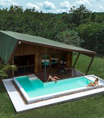

Gallery



.jpg)
The Akuapem is one of the few confederacies in Ghana. It consists of people of Guan and Akan descent. The Akuapem State has a total land area of 1,519.13 km2 (586.54 sq mi). They reside mostly to the south of the Eastern Region of Ghana. They are indigenous, consisting of both patriarchal Volta-Comoe-speaking Guans and matriarchal Kwa-speaking Akans. The town has a lot of history and story due to the diverse range of people there.
The Akuapem formerly referred to only Guan speakers, including the Anum, Boso, Larteh, Mamfe, Abotakyi, Mampong, Obosomase, and Tutu Guan blocks as well as the Kyerepong (Okere) Guan blocks, which comprise Abiriw, Dawu, Awukugua, Adukrom, Apirede, and Abonse-Asesieso. The localities that speak Akan Twi include the capital, Akropong, Pokrom Nsabaa, and Amanokurom, which are home to immigrants from Akyem and Mampong, who are also from Asante Mampong in Ashanti Region. These multi-ethnic people were given the name Akuapem by Nana Ansa Sasraku I of Akwamu, a renowned warrior king. The word 'thousand groups' (Nkuu apem) in Akan Twi is the source of the name. After the people overpowered his Akwamu invasion force, he gave them these names. The term Nkuu apem was altered to Akuapem.